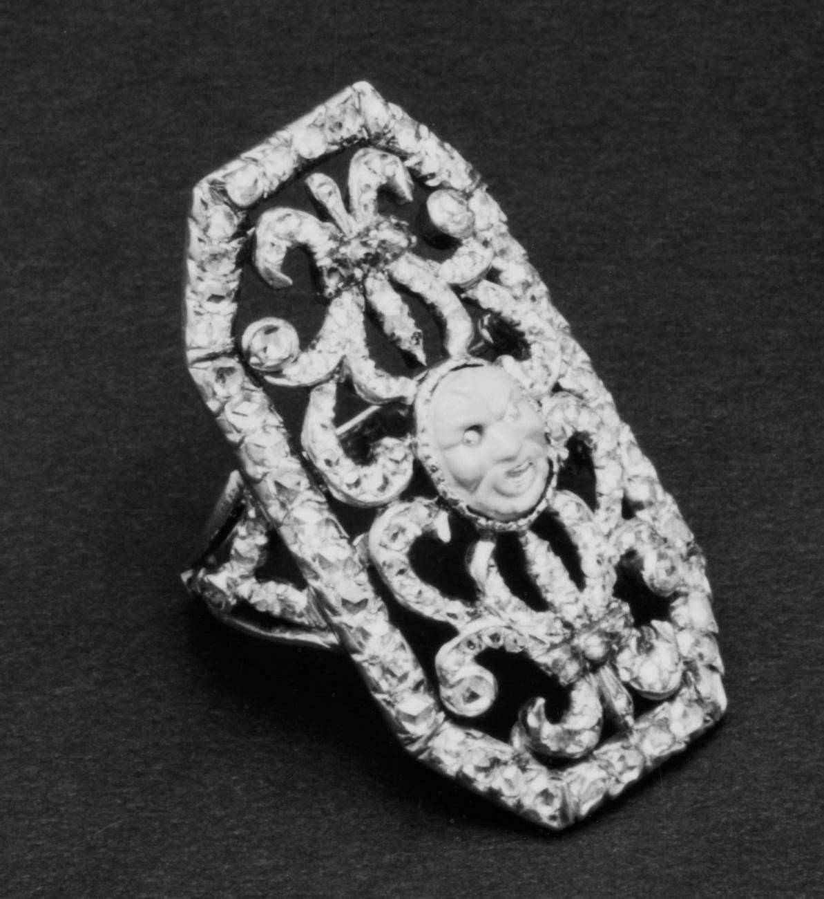

Where the industry meets its customer — and its future. The retail desk covers lab-grown economics, e-commerce and live-selling, traceability tech, AI in the showroom, and the store formats winning buyers who are 24, online at midnight, and allergic to velvet ropes.

At an 86% discount to natural, LGD is no longer a diamond substitute — it's a fashion-jewelry category with diamond optics. Margins migrate from the stone to the brand and the volume.
The livestream counter that built China's jewelry e-commerce is landing in the West — TikTok gem sales, WhatsApp private clienteling, and jewelers becoming broadcasters.
Blockchain provenance, ledgers, and assay-office digital passports move from pilot to mandate as regulation and retailer policy converge. The tech stack becomes a condition of shelf space.
Diamonds grown in weeks by HPHT or CVD — chemically identical to mined, economically a different universe. Their price curve is a technology curve, which is the whole story.
One-to-one retail relationship management — the private-client WhatsApp thread, remembered anniversaries, first calls on new goods. The oldest luxury skill, now run on software.
The customer researches at midnight, tries on Saturday, buys by DM on Tuesday. Winning retailers price, stock and staff as one continuous counter across all of it.
An EU-led ID standard giving each piece a scannable record of origin, materials and custody. Coming for jewelry the way nutrition labels came for food.
April–June retail sales rose 32% y/y (group SSS +39%; HK/Macau +41%, mainland +22%). Gold SSS gained 50% (HK/Macau +55%) while diamond SSS fell 17% group-wide and 58% on the mainland. Net 148 stores closed, leaving 2,857. Chow Sang Sang's retail value rose 16% (SSS +17% China, +30% HK/Macau), with 776 doors after 49 net H1 closures.
Tenoris data shows first-half revenue up 8.6% and June up 13%, driven by average purchase prices rising 19–20% while unit sales fell, especially under $1,500. Bracelets led categories at +14%; lab-grown grew double-digit on units while natural diamonds grew single-digit on price.
Counterfeits, Frankenwatches, misdescriptions and stolen goods; Omega 13%, Tudor 6%, Cartier 5%, most others 2–3%. Rejected Rolexes are 43% of refused value; Patek 22%. Rolex is 28% of Bezel sales and 34% of wish lists.
CETA effective 15 July; UK scraps duties on 96.8% of tariff lines (97.7% of trade value); first zero-duty gold, silver and diamond jewelry consignments shipped 16 July. India→UK goods exports $13.44B in FY25–26; 900+ jewelry firms expected to benefit.
Census advance estimate; tax-refund tailwinds faded, online led category gains. Jewelry's H2 setup: a deliberate consumer, gold's 21.8% YTD climb as the value script.